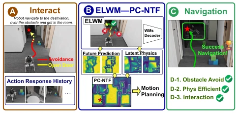
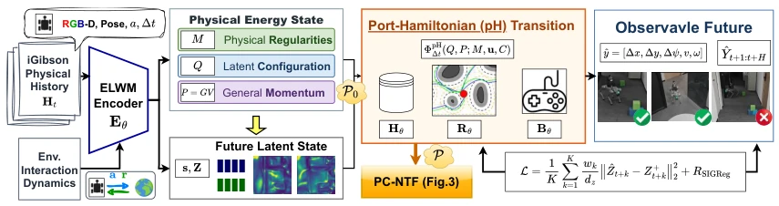
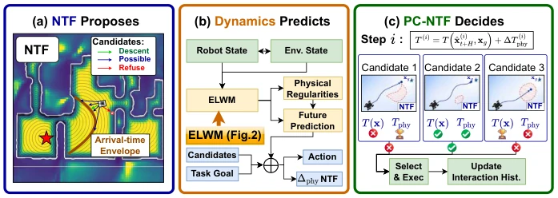

This paper prescribes a remedy for the "physical hallucination" of embodied AI, attempting to forcibly inject a "physical soul" into latent space world models using Port-Hamiltonian structures. ELWM explicitly embeds energy and momentum into latent variables; this approach is indeed more reliable than generic models that only learn to "look like" physical entities, since robots crash into walls not due to geometric miscalculation, but because they forget their own mass. PC-NTF grafts this physical prediction onto neural time fields, transforming navigation from merely "looking at a map and walking straight" to "assessing road conditions and calculating time." However, while this method performs well in simulation, can complex friction and deformation in the real world be resolved solely by a few energy conservation formulas? Furthermore, although hard-coding physical priors into the model ensures stability, what if it encounters "unusual" physical environments unseen during training? Will the model freeze due to being too "logical"? After all, the real world sometimes disregards physical laws.
研究动机Motivation
具身AI的核心痛点在于：生成的轨迹必须严格符合真实世界的动力学约束，否则就是“纸上谈兵”。现有的潜世界模型（Latent World Models）虽然能预测未来，但大多学习的是无约束的隐式表示，导致物理规律（如耗散、相互作用）被淹没在任务特定的权重中，无法形成可复用的物理知识（Lutter, Ritter, and Peters 2019; Ye et al. 2026）。在开放世界导航中，仅靠几何信息（如ANTF）无法应对负载变化、执行器限制等动态因素，导致规划出的路径虽然几何可行，但物理上不可执行（Liu, Ni, and Qureshi 2025）。此外，现有的物理感知模型多关注模型内部一致性，缺乏与运动规划系统的直接接口，无法将预测的物理后果转化为全局导航代价（Nie et al. 2026; Shang et al. 2026）。因此，亟需一种能显式编码物理结构、并能直接指导规划的世界模型。
The core pain point of embodied AI lies in: generated trajectories must strictly conform to the dynamic constraints of the real world, otherwise it is "armchair strategizing." Existing Latent World Models, while capable of predicting the future, mostly learn unconstrained implicit representations, leading to physical laws (such as dissipation, interaction) being submerged in task-specific weights, unable to form reusable physical knowledge (Lutter, Ritter, and Peters 2019; Ye et al. 2026). In open-world navigation, relying solely on geometric information (such as ANTF) cannot cope with dynamic factors such as load changes and actuator limits, resulting in planned paths that are geometrically feasible but physically inexecutable (Liu, Ni, and Qureshi 2025). Additionally, existing physics-aware models mostly focus on internal model consistency, lacking direct interfaces with motion planning systems, unable to convert predicted physical consequences into global navigation costs (Nie et al. 2026; Shang et al. 2026). Therefore, there is an urgent need for a world model that can explicitly encode physical structure and directly guide planning.

Figure 1: ELWM–PC-NTF bridges action-conditioned physical prediction and motion planning. (A) Robot interac- tions need action–response capability, (B) ELWM predicts future motion and latent physical dynamics, and PC-NTF combines them with neural time fields. (C) System closed- loop execution produces obstacle-aware, physics-informed navigation towards the goal.
The overall framework consists of ELWM (Energy-structured Latent World Model) and PC-NTF (Physical Conditioned Neural Time Field). In terms of data flow, the system first encodes multimodal RGB-D and inertial interaction history into latent physical states via an encoder, containing slow physical laws (Mt) and generalized coordinates/velocities (Qt, Vt). The core innovation lies in ELWM's Port-Hamiltonian (pH) transition mechanism: it explicitly defines energy functions (kinetic + potential) and dissipation/control ports in latent space, ensuring state transitions strictly follow energy conservation and dissipation laws (Eq. 5-6). During training, the model optimizes by predicting future latent states while enforcing energy balance residuals. In the planning phase, PC-NTF uses NTF to generate geometric candidate actions, ELWM predicts the physical execution consequences of each candidate action (such as arrival time, velocity decay), and superimposes these physical costs (ΔT_phys) as correction terms onto the NTF's geometric arrival time (Eq. 11), forming a physics-conditioned Eikonal equation solution. Finally, the system selects the optimal action execution based on the corrected time field, forming a closed loop.

Figure 2: Overview of ELWM. Physical history and interaction dynamics are encoded into physical and latent state; a controlled, dissipative port-Hamiltonian transition formalizes the prediction latent prior as motion futures P for PC-NTF planning (in Fig.3). ELWM Training by the state future consistency.

Figure 3: PC-NTF motion planning pipeline. (a) NTF proposes shared motion candidates -> (b) ELWM predicts their action- conditioned execution consequences -> (c) PC-NTF selects the candidate with the most efficient traversal delay.
实验Experiments
实验在iGibson室内场景、HM3D拓扑场景及多变地形数据集上进行。基线包括Active Neural Time Fields (ANTF) 和容量匹配的通用潜世界模型（Generic WM）。评测指标涵盖0.8秒运动预测NRMSE、导航成功率（SR）、SPL、物理碰撞率及Eikonal残差。结果显示，ELWM将NRMSE从0.36降至0.29，能量平衡残差低至1.88×10^-7，证明了物理一致性。在规划层面，PC-NTF相比ANTF将SR从81.3%提升至89.7%，SPL从0.64升至0.73，物理碰撞率从12.1%降至5.8%，且Eikonal残差显著降低。消融实验表明，移除物理条件或打乱物理规律会导致性能大幅下降，验证了显式物理结构对规划的有效性。
Experiments were conducted on iGibson indoor scenes, HM3D topological scenes, and varied terrain datasets. Baselines include Active Neural Time Fields (ANTF) and capacity-matched generic latent world models (Generic WM). Evaluation metrics cover 0.8s motion prediction NRMSE, navigation success rate (SR), SPL, physical collision rate, and Eikonal residual. Results show ELWM reduced NRMSE from 0.36 to 0.29, with energy balance residuals as low as 1.88×10^-7, proving physical consistency. At the planning level, compared to ANTF, PC-NTF increased SR from 81.3% to 89.7%, SPL from 0.64 to 0.73, reduced physical collision rate from 12.1% to 5.8%, and significantly reduced Eikonal residuals. Ablation studies indicate that removing physical conditions or scrambling physical laws leads to a significant performance drop, validating the effectiveness of explicit physical structures for planning.